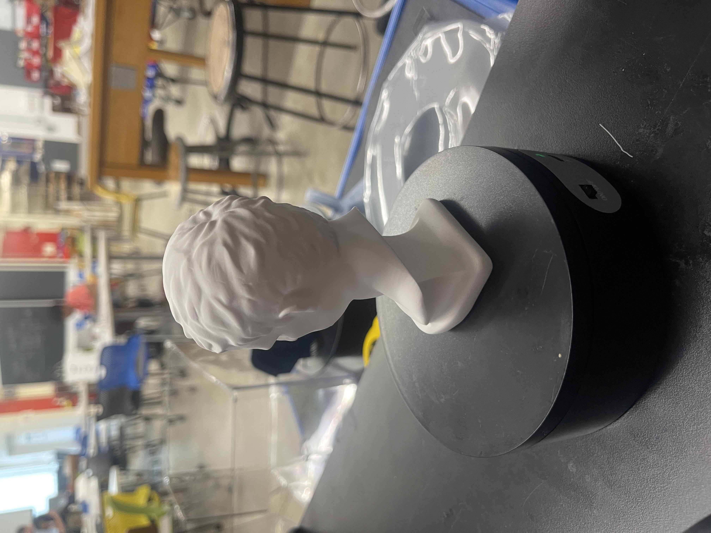
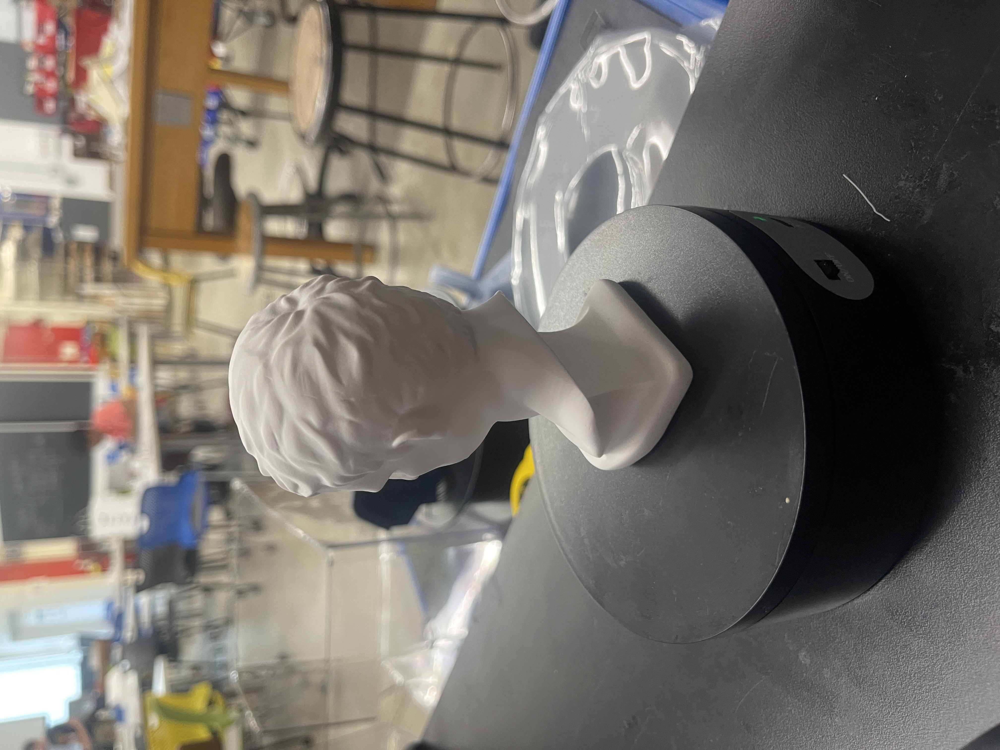

Throughout the 5th week, we learned how to use 3D modeling machines such as the 3D printer.
In particular, we learned how to implement Fusion360 files into applications such as PrusaSlicer, to create
and print out our own 3D sculpture/designs. To add on, we were also taught how to use the RevoPoint 3D
scanner, in order to scan real life objects and recieve a 3D model in the computer that could be edited in
Fusion360.
1. 3D Printing
Design: Lego Block
I tried to replicate the design of a Lego Block. I first started the design by creating a 2D rectangle and
then extruding it to the dimensions of a lego block (0.6" x 2.5" x 0.5"). After creating the flat plane of
the design, I then used the circle to create on of the circles on the top of the lego block.
Using the
rectangular pattern tool I added 7 more circles to the flat plane to create the 2x8 lego block. After this,
I extruded the circles on the top so that they would stick out. Furthermore, I used the fillet tool on the
brims of the circles to give it a more realistic look. In addition, I then used the hollow tool to make the
inside of the lego block hollow.
After fully designing the 3D model of the lego block, I saved the Fusion360 file as a mesh, and then
implemented the model on towards PrusaSlicer. Before slicing the 3D model of the lego block, I created a
support structure in the base of model. The reason for this was because the model was hollow in the middle;
without the use of support structures, the 3D print would have malfunctioned due to a lack of solid
structure.
Printing Results:
2. 3D Scanning
Another part of this week's assignment was to use a photogrammetry application or a scanner to scan an
object
within the lab to retreive a 3D model of it.
Using the RevoPoint Scanner, I managed to scan a sculpture that I found within the lab. Here are a couple of
pictures of the sculpture before the scan:


 
